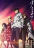
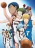

| Titre | Nb d'Episodes | Durée Episode | |
|---|---|---|---|
|
Aldnoah.Zero En 1972, un étrange portail fonctionnant à base d'Aldnoah et menant à la planète Mars fut découvert sur la Lune. Cette découverte marqua le début de l'installation humaine sur cette planète, notamment grâce à Rayregalia Vers Rayvers, qui se vit confier les secrets de l'Aldnoah. Un secret et un po... Genres : Action, Science-fiction Thèmes : Guerre, Mechas |
24 | 23 min | |
|  |
Darwin's Game Basé sur le manga Darwin's Game de FLIPFLOPs L'histoire se centre sur Kaname Sudo, un lycéen qui accepte une mystérieuse invitation venant d'une application nommée "Darwin's Game." Malheureusement pour lui, le Darwin's Game est une arène urbaine où les participants sont interconnectés via un rése... Genres : Action, Mystère, Science-fiction, Thriller Thèmes : Survival game |
11 | 24 min |
|  |
Kuroko no Basket La Génération Miracle, la fameuse équipe du collège Teikou composée de cinq génies. Une légende raconte qu'un sixième membre fantôme aurait fait partie de cette équipe, un membre que les cinq autres respectaient et considéraient comme leur supérieur. C'est la rentrée des classes au lycée Seirin e... Genres : Comédie, Drame, Shônen, Tournois Thèmes : Basketball, Ecole, Sport |
75 | 24 min |
|
No Game No Life Sora et Shiro sont deux frère et sœur hikikomori. L'hikikomori désigne une pathologie psycho-sociale caractérisant les personnes (souvent des adolescents) qui vivent coupées du monde en restant cloîtrées chez elles, refusant toute communication. Dans le cas des deux protagonistes, leur condition... Genres : Aventure, Comédie, Ecchi, Fantastique, Fantasy Thèmes : Autre monde, Jeux, Otaku |
12 | 23 min | |
|
Shingeki no Kyojin Il y a 107 ans, les Titans ont presque exterminé la race humaine. Ces Titans mesurent principalement une dizaine de mètres et ils se nourrissent d'humains. Les humains ayant survécus à cette extermination ont construit une cité fortifiée avec des murs d'enceinte de 50 mètres de haut pour pouvoir... Genres : Action, Drame, Horreur / Épouvante, Mystère, Psychologique, Shônen, Surnaturel, Thriller Thèmes : Gore, Militaire, Post-apocalyptique, Steampunk |
59 | 24 min |